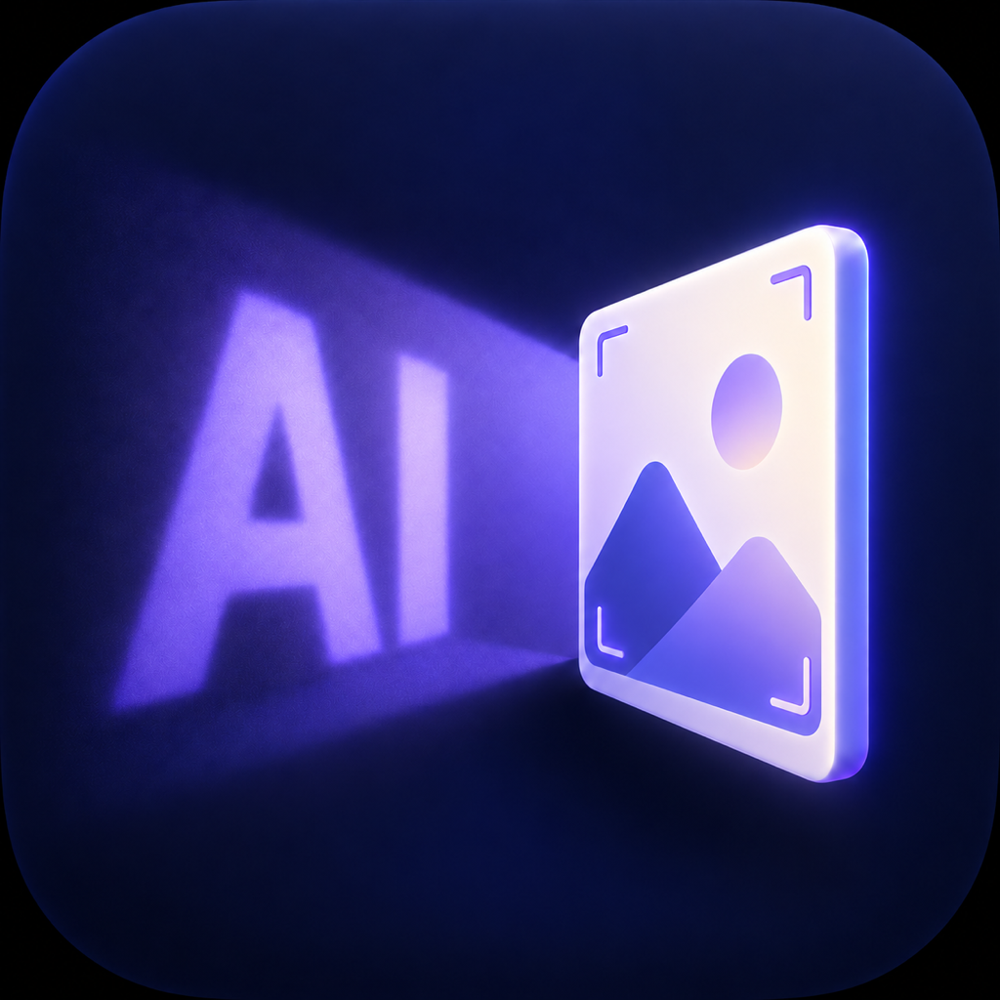
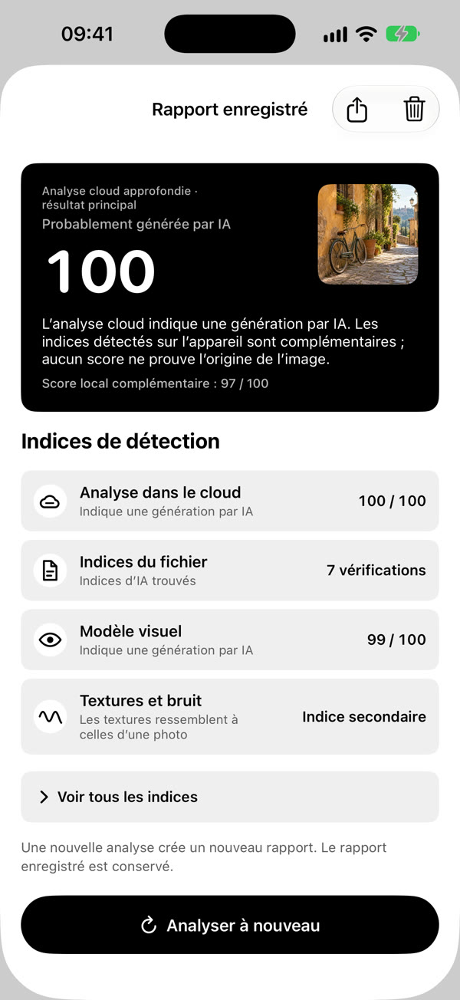
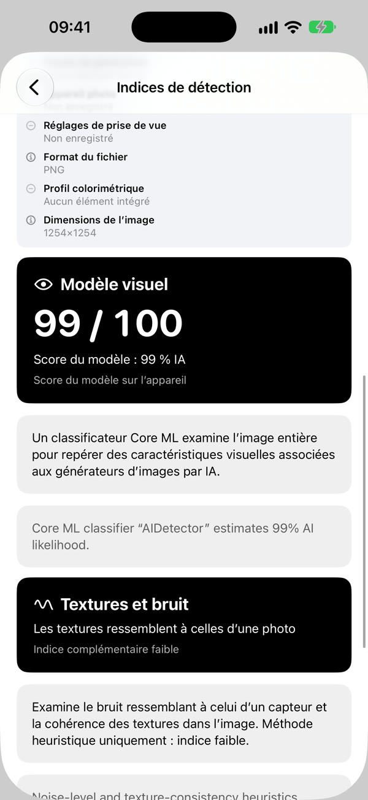
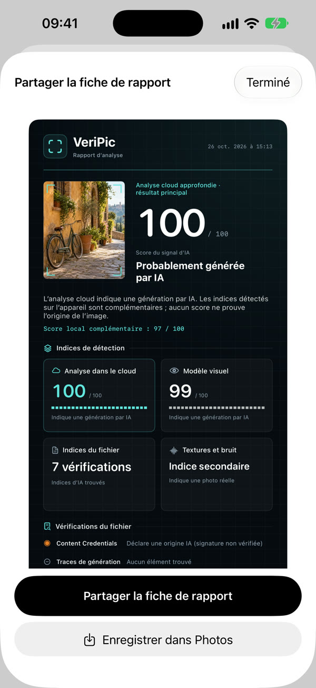

Avant de partager
Une photo étonnante dans votre fil ? Cherchez les indices d’IA avant de la transmettre.

VeriPicAvant de partager, d’acheter ou de croire une image, examinez ses indices. VeriPic réunit les résultats cloud et les signaux locaux dans un rapport lisible.
Première publication App Store en cours d’examen

Trois occasions de regarder deux fois.
Une photo étonnante dans votre fil ? Cherchez les indices d’IA avant de la transmettre.
Une photo produit trop parfaite ? Examinez les signaux avant de décider.
Une image appuie une grande affirmation ? Examinez ses indices, puis croisez les sources.
Après une analyse réussie, le résultat cloud apparaît en tête. Informations du fichier, signaux visuels et indices de texture restent disponibles en complément.


Une véritable démonstration sur un rapport existant, sans nouvelle analyse cloud. Le cloud peut nécessiter des crédits payants.
Ouvrez une analyse enregistrée, examinez les résultats cloud et locaux, consultez les éléments détaillés, puis ouvrez le rapport à partager.
Télécharger la démonstrationL’analyse locale est gratuite, sans inscription. Les envois cloud nécessitent votre autorisation. La contribution à l’amélioration du modèle est un choix distinct.
Les packs cloud s’achètent ponctuellement, sans abonnement ni renouvellement automatique. Les analyses gratuites dépendent des limites du service et de leur disponibilité.
Les résultats sont des indices, pas une preuve d’authenticité. VeriPic ne vérifie ni vendeurs, ni identités, ni actualités. La compression et les générateurs inconnus peuvent influencer les résultats.